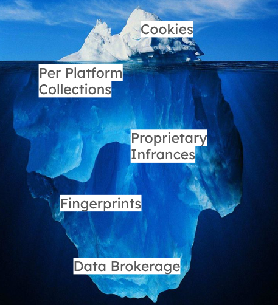
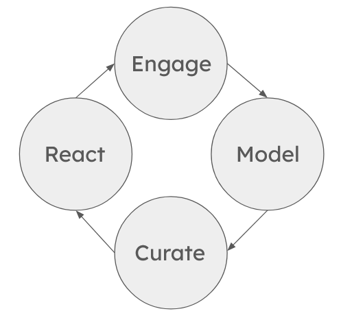

Algorithmic Insights
My self-assignment was to dig into both the technical and academic sides of recommendation algorithms, then use what I learned to guide three informational interviews with people in my life to find out which parts of this topic feel most pressing and resonant to others.
I started with research, mapping the layers of data that feed these systems, where each one is stored, and how much a user can actually interact with it. Some layers are nearly out of reach. Data brokers, for example, keep their own collections of data on you on their own servers and there’s little you can do to see or change them. Other layers, like browser cookies, the data each platform holds on your account, and the inferences these platforms make, can be engaged with, to varying degrees of impact and success.

Most social media platforms also let you request a copy of your data, and many let you delete your history or reset your feed, wiping at least some of what the platform has concluded about you. I find these data downloads especially interesting: they’re a chance to parse and dissect what’s been collected on a person, where it came from, and where it goes.
I then spoke with three people about how they experience the algorithms that curate their online lives: how they think the algorithm sees them, what has felt uncanny, and what they wish they could control.
Everyone had a working theory of how their algorithm behaves, and everyone adapted around it, whether by timing posts, splitting their lives across separate accounts, or quietly withholding likes to keep topics off their feeds. That withholding idea came up time and time again. The most honest feedback people give is what they don’t engage with, which these systems can’t interpret.
My own model for understanding how information flows and reacts through reccomendation algorithms.

The frustrations were consistent too. The algorithm overreacts; turning a single search into a flooded feed. It remembers too long; one person was still getting notifications about an ex’s posts years after the breakup, and another described her past selves as stuck in the algorithm. And it flattens people into caricatures. When asked to describe how they think their algorithm sees themselves, one answered “someone who loves to laugh and buy stuff,” someone else said “photogenic and cool, interested in aesthetics and talking with other cute girls”. This flattening in turn creates silos of topics, opinions, and shared resonance. For one interviewee, that targeting turned harmful, surfacing ads about substance abuse and self-harm until she felt unsafe.
What people wanted was intentionality and flexibility in their relationship with the algorithm. One imagined rating every post instead of being read through engagement. Another proposed a rolling memory that only lasts a week, an idea that became central to my thinking.
I am split between two final project concepts that I hope some conversations with the class can help me decide between. The first is a short term memory browser that “forgets” any data about its user that's older than a week. By avoiding the persistent growth of data, this form of browsing will allow a user to explore tangents without being tied to their digital profile. A constant drag towards the average user that can then be refined on a use by use basis, instead of constantly being shrunk into a more and more niche corner of the internet. The other idea is a tool to help pull and parse the data that these companies have collected on you. It is already difficult enough to find where to download these data dumps, let alone parse and understand them. Through an open source repository, I would guide users through finding and interpreting their digital profiles, gaining a greater understanding as to how their online experience is being curated.